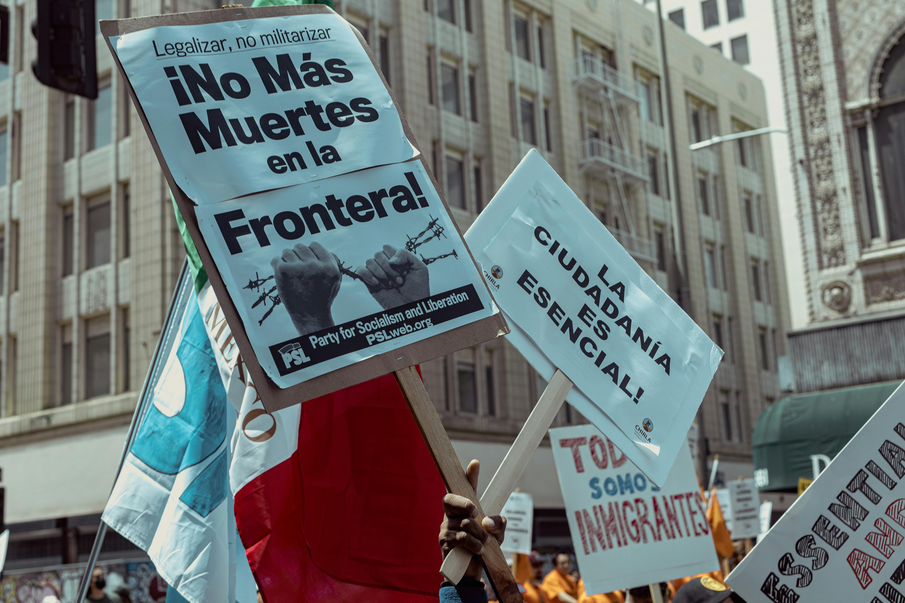

E quais as primeiras dificuldades quando eles chegam ao Brasil?
As barreiras línguisticas
Outra grande dificuldade que os refugiados enfrentam ao procurar emprego ou moradia no Brasil é a língua portuguesa. Isso é o que afirma o Instituto de Pesquisa Econômica Aplicada (Ipea), que aponta a barreira linguística como uma das principais causas do desemprego elevado dos imigrantes.
Recolocação profissional
Apesar de acolher muitas pessoas, existem poucas políticas públicas que ajudam os refugiados a se inserirem na sociedade, fazendo com que muitos passem por dificuldades. Dados da ONG Estou Refugiado, em parceria com o Instituto Qualibest, mostram que 66% dos imigrantes enfrentam dificuldades em encontrar um emprego.
Acesso a serviços médicos.
Os imigrantes têm baixas taxas de cobertura de seguro médico e fraco acesso aos serviços de saúde. Além disso, as mudanças políticas limitaram o acesso dos imigrantes a seguros e cuidados de saúde. Estas barreiras vão desde limitações financeiras à discriminação e medo de deportação. Isto contribuiu para preocupações crescentes sobre a capacidade dos imigrantes de participarem em muitos programas de cuidados de saúde gratuitos.

Habitação
Os imigrantes são provavelmente o grupo mais vulnerável no que diz respeito à habitação. Isto porque enfrentam graves desafios para encontrar habitação segura, digna e acessível. No entanto, os problemas de habitação dos imigrantes são mais do que apenas a taxa de propriedade de casa própria. Muitos destes imigrantesrecém-estabelecidos estão desempregados e não têm condições de pagar o aluguel. Além disso, há uma carga de custos de habitação mais elevada para os imigrantes ilegais em comparação com os seus homólogos imigrantes legais.